Introducción
El objetivo de estos ejercicios es practicar los bucles for anidados y la creación de gráficos SVG que se tratan en las lecciones SVG y Formas básicas SVG de los apuntes de HTML y CSS.
Cada dibujo se puede guardar en un fichero distinto que se puede llamar svg-ficheros-3_X_Y.html, donde X es el número de ejercicio e Y el número de dibujo. Las imágenes SVG se muestran con un borde negro. Todos los ejercicios se pueden realizar a partir de la misma plantilla de la página html que indica la porción del plano SVG mostrado en la imagen. Las figuras se han dibujado siempre en una zona de 600px x 300px con un margen de 10px alrededor, por lo que el tamaño total de la zona visible es de 620px x 320px.
Se pueden consultar unas posibles soluciones.
Cree las imágenes SVG propuestas en los ejercicios a partir de la plantilla siguiente. Los valores de la imagen SVG se han elegido para mostrar el primer cuadrante y los ejes de coordenadas. La posición de los ejes se muestra en la imagen siguiente, pero no debe mostrarse en las imágenes del ejercicio.

<!DOCTYPE html>
<html lang="es">
<head>
<meta charset="utf-8" />
<title>Ficheros (3). SVG. Ejercicios. Python</title>
<meta name="viewport" content="width=device-width, initial-scale=1.0" />
</head>
<body>
<svg version="1.1" xmlns="http://www.w3.org/2000/svg"
width="620" height="320" viewBox="-10 -10 620 320"
style="border: black 1px solid">
</svg>
</body>
</html>
 1 3")
 1 4") 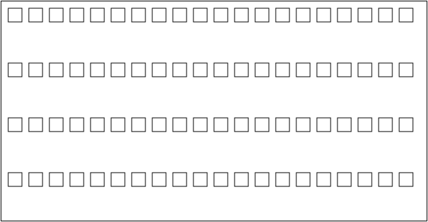
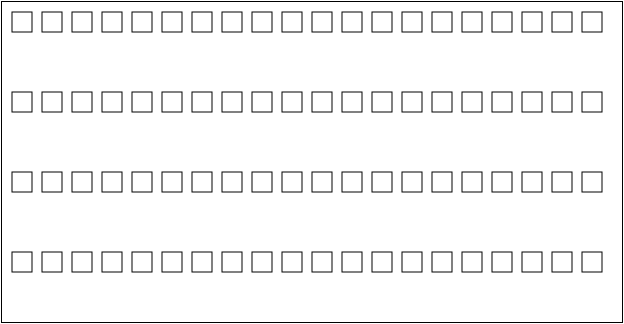
 1 6")
 2 1")
 2 2")
 2 3")
 2 4")
 2 5") 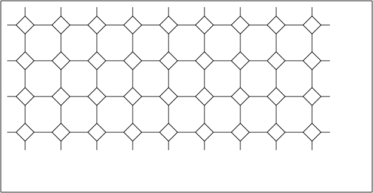
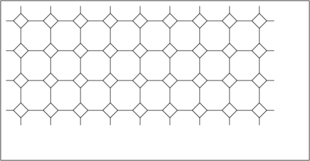
 3 1") 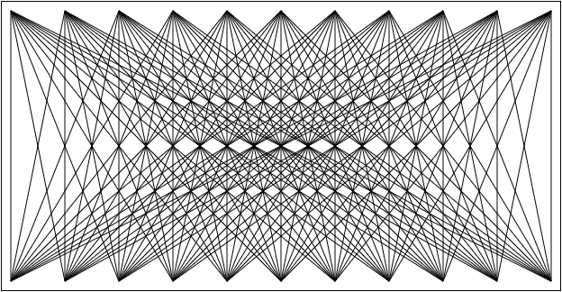
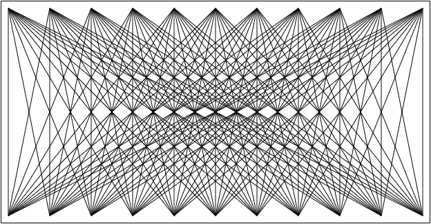
 3 3") 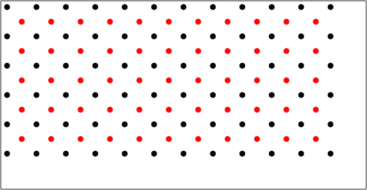
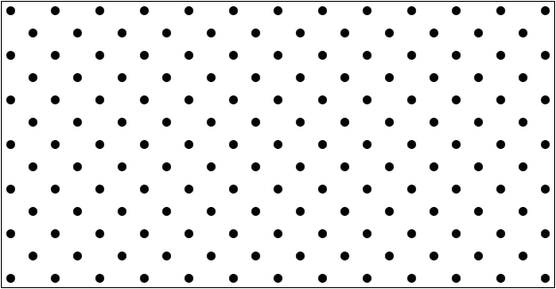
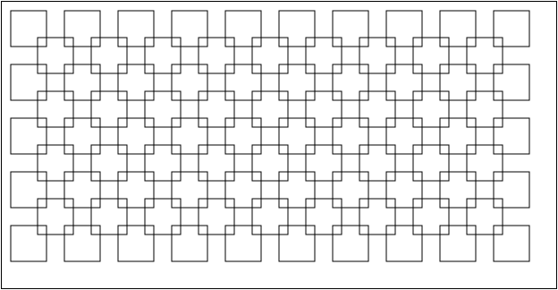
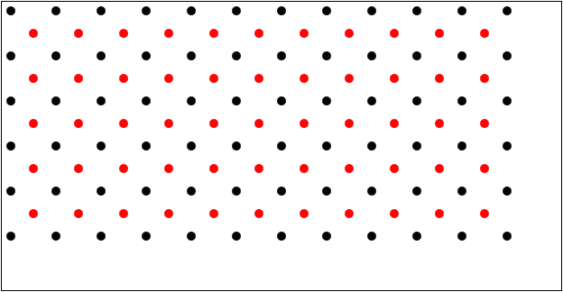
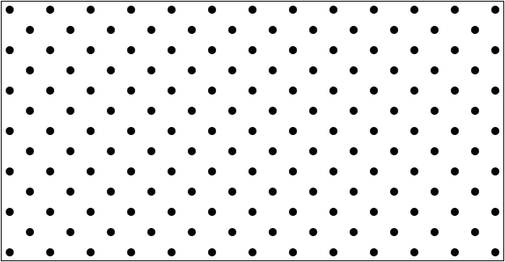
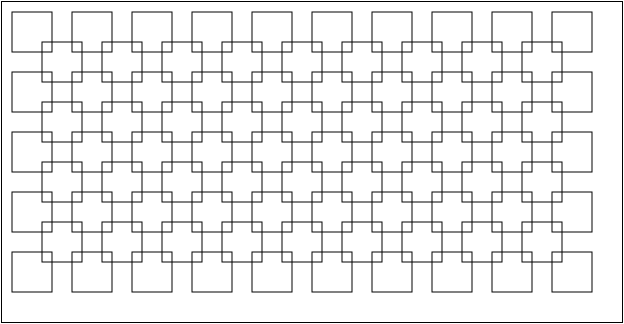